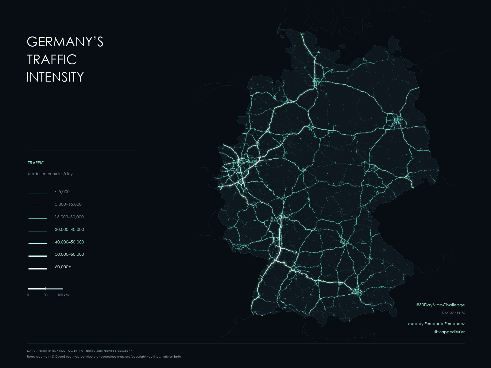

Germany’s Traffic Intensity

Germany’s roads, traced in traffic.
446,471 road segments reveal the structure of Germany’s motorways and major roads. Seven classes of modelled daily vehicle traffic turn faint cyan roads into thicker, luminous mint corridors as estimated volumes rise.

The idea
Show how the intensity of road traffic shapes a national network. A dark composition lets quieter roads recede while the busiest modelled connections emerge through width, light and a restrained glow. The map explores traffic volume, rather than congestion or network centrality.
How it was made
The published GeoParquet was read with DuckDB in R, selecting OSM motorway, trunk, primary and secondary roads and their connectors. For each source link, modelled light-vehicle and heavy-vehicle daily traffic were added. The resulting values were grouped into seven classes, from below 5,000 to 60,000+ vehicles per day. Geometry was projected to ETRS89 / LAEA Europe (EPSG:3035) and simplified by 15 metres. Flat line caps and reduced halos on very short components limit dot-like rendering artifacts without removing road segments or changing traffic values.
Sources & limitations
Traffic: Markelj, Grythe, Schneider, Mijling & Lopez-Aparicio — Modelled Light and Heavy duty Annual Daily Traffic on all European roads, v1, NILU / KNMI, published 7 September 2026, CC BY 4.0. Road geometry derives from OpenStreetMap contributors; contextual borders are from Natural Earth. Values are model estimates, not live observations or measured counts at every segment. The catalogue does not specify a common traffic reference year. Separate carriageways may be separate source links; values must not be added into a national vehicle total. Higher volume does not necessarily mean congestion.